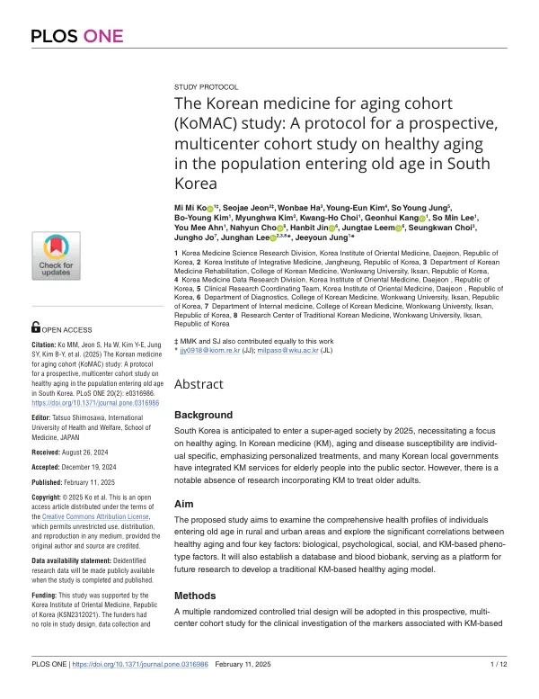

The Korean medicine for aging cohort (KoMAC) study: A protocol for a prospective, multicenter cohort study on healthy aging in the population entering old age in South Korea
Ko MM, Jeon S, Ha W, Kim YE, Jung SY, Kim BY, Kim M, Choi KH, Kang G, Lee SM, Ahn YM, Cho N, Jin H, Leem J, Choi S, Jo J, Lee J, Jung J
PLOS ONE 20(2):e0316986

첫 장 · 오픈액세스First page · open access
논문 소개Summary
초고령사회를 앞두고 노년에 들어서는 사람들의 건강을 한의 지표까지 넣어 살펴보려는 코호트 연구의 프로토콜입니다. 중소도시인 익산의 원광대학교한방병원과 농촌인 장흥의 장흥통합의료병원에서 50세부터 65세까지 1,000명을 모아 2025년까지 해마다 추적하고 혈액검사는 등록 시점과 마지막 추적 때 두 번 합니다. 생물학·심리·사회 요인과 신허, 어혈, 칠정 같은 한의 표현형을 함께 재고 데이터베이스와 혈액 바이오뱅크, 다중오믹스 자료를 남깁니다. 프로토콜이라 결과는 없습니다. 저자들은 1,000명이 두 지역 목표 인구의 1% 수준이어서 노년 인구 전체를 대표하기에는 한계가 있다고 적었습니다.
A protocol for a cohort study that examines the health of people entering old age with Korean medicine indicators included, ahead of Korea's transition to a super-aged society. One thousand adults aged 50 to 65 will be recruited at Wonkwang University Korean Medicine Hospital in Iksan, a medium-sized city, and Jangheung Integrative Medical Hospital in a rural area, then followed annually through 2025, with blood tests at baseline and at the final follow-up. Biological, psychological and social factors are measured alongside Korean medicine phenotypes such as kidney deficiency, blood stasis and the seven emotions, and the study will leave behind a database, a blood biobank and multi-omics data. As a protocol it reports no results. The authors note that 1,000 participants amounts to about 1% of the target population in the two areas, which limits how far the cohort can represent the older population as a whole.
인용Cite
Ko MM, Jeon S, Ha W, Kim YE, Jung SY, Kim BY, Kim M, Choi KH, Kang G, Lee SM, Ahn YM, Cho N, Jin H, Leem J, Choi S, Jo J, Lee J, Jung J. The Korean medicine for aging cohort (KoMAC) study: A protocol for a prospective, multicenter cohort study on healthy aging in the population entering old age in South Korea. PLOS ONE. 2025;20(2):e0316986. doi:10.1371/journal.pone.0316986